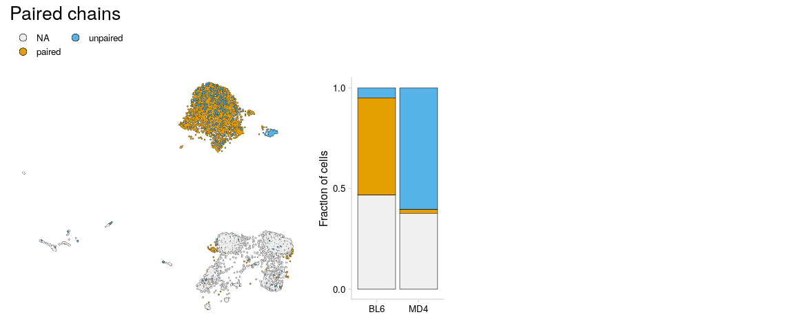
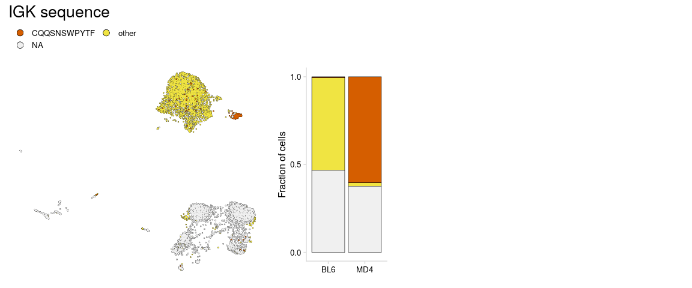
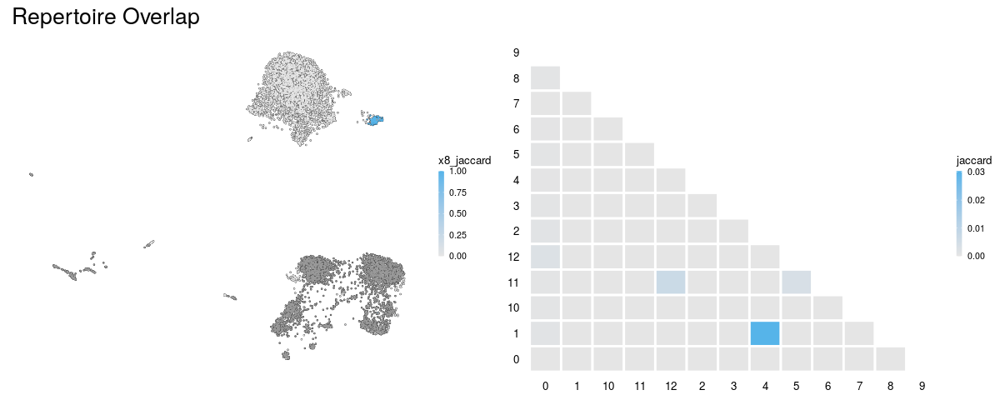

The goal of djvdj is to provide tools to analyze AVID-seq signals alongside single-cell VDJ sequencing data.
Installation
You can install the development version of djvdj from GitHub with:
# install.packages("devtools") devtools::install_github("rnabioco/djvdj")
Vignette
Splenocytes from MD4 transgenic mice which have monoclonal B cells that all bind hen egg lysozyme (HEL) antigen were mixed with splenocytes from C57BL/6 mice at a 1:20 ratio. The cells were stained with the HEL AVID-tag and sequencing libraries were prepared to capture gene expression, B cell receptor sequences, and AVID-tag signals using the 10x Genomics 5’ immune profiling kit.

Import VDJ data
import_vdj takes the output files from cellranger vdj and adds clonotype information to the meta.data for an existing Seurat object. For cells that do not have any VDJ sequencing data, NAs will be included in the meta.data. The filter_contigs argument will only include chains that have at least one contig that is full length and productive.
so_vdj <- import_vdj( sobj_in = so, # Seurat object vdj_dir = params$vdj_dir, # Directory containing cellranger output files prefix = "", # Prefix to add to new meta.data columns cell_prefix = "", # Prefix to add to cell barcodes filter_contigs = TRUE # Only include chains with at least one productive contig ) vdj_cols <- c("chains", "cdr3", "n_chains") so_vdj@meta.data %>% as_tibble() %>% select(orig.ident, nCount_RNA, nFeature_RNA, all_of(vdj_cols)) #> # A tibble: 7,137 x 6 #> orig.ident nCount_RNA nFeature_RNA chains cdr3 n_chains #> <fct> <dbl> <int> <chr> <chr> <int> #> 1 AVID-seq 884 551 IGH;IGK CVKGYDYDWYFDVW;CLQYDNLWTF 2 #> 2 AVID-seq 3061 970 <NA> <NA> NA #> 3 AVID-seq 1297 677 IGH;IGK CARGRLGYAMDYW;CQHFWSTPWTF 2 #> 4 AVID-seq 1570 848 <NA> <NA> NA #> 5 AVID-seq 2277 818 <NA> <NA> NA #> 6 AVID-seq 1320 566 <NA> <NA> NA #> 7 AVID-seq 570 348 <NA> <NA> NA #> 8 AVID-seq 909 489 IGH;IGK CTVSYTKDWYFDVW;CAQNLELPL… 2 #> 9 AVID-seq 1072 588 IGH;IGK CARSYDYDPLYYAMDYW;CLQSDN… 2 #> 10 AVID-seq 1143 594 IGH;IGK CARSRLAYW;CLQYASSPFTF 2 #> # … with 7,127 more rows
Filtering
filter_vdj allows you to filter a Seurat object using the added clonotype information or any other columns present in the meta.data. For cells with multiple chains, the information for each chain is stored as a single row, separated by a “;”. When filtering, columns with VDJ data will be expanded based on the delimiter “;”. The columns that are expanded for filtering can be specified with the split_cols argument. By default filtering is only performed on cells that include VDJ data.
Filter to only include cells with paired light and heavy chains.
so_filt <- filter_vdj( sobj_in = so_vdj, # Seurat object filt = "IGH" %in% chains && any(c("IGK", "IGL") %in% chains) # Expression for filtering ) so_filt@meta.data %>% as_tibble() %>% filter(!is.na(clonotype_id)) %>% select(all_of(vdj_cols)) #> # A tibble: 3,353 x 3 #> chains cdr3 n_chains #> <chr> <chr> <int> #> 1 IGH;IGK CVKGYDYDWYFDVW;CLQYDNLWTF 2 #> 2 IGH;IGK CARGRLGYAMDYW;CQHFWSTPWTF 2 #> 3 IGH;IGK CTVSYTKDWYFDVW;CAQNLELPLTF 2 #> 4 IGH;IGK CARSYDYDPLYYAMDYW;CLQSDNLPLTF 2 #> 5 IGH;IGK CARSRLAYW;CLQYASSPFTF 2 #> 6 IGH;IGK;IGL CAKRGYSNSLDYW;CQHFWSTPYTF;CALWYSNHWVF 3 #> 7 IGH;IGK CANPITTAEGWYFDVW;CLQHGESPYTF 2 #> 8 IGH;IGK CARSYGYAMDYW;CWQGTHFPYTF 2 #> 9 IGH;IGK CARWVYGSAWFAYW;CMQHLEYPFTF 2 #> 10 IGH;IGK CARSHGYDFYAMDYW;CQHFWGTPRTF 2 #> # … with 3,343 more rows
Instead of filtering, filter_vdj can also add new cell labels to the object meta.data using the new_col argument. Here a new column is added indicating whether each cell has a paired heavy and light chain. This is useful for plotting.
so_vdj <- filter_vdj( sobj_in = so_vdj, # Seurat object filt = "IGH" %in% chains && any(c("IGK", "IGL") %in% chains), # Condition to use for filtering new_col = "Paired", # Name of new column true = "paired", # Value when condition is TRUE false = "unpaired" # Value when condition is FALSE ) vdj_cols <- c(vdj_cols, "Paired") so_vdj@meta.data %>% as_tibble() %>% filter(!is.na(clonotype_id)) %>% select(all_of(vdj_cols)) #> # A tibble: 3,820 x 4 #> chains cdr3 n_chains Paired #> <chr> <chr> <int> <chr> #> 1 IGH;IGK CVKGYDYDWYFDVW;CLQYDNLWTF 2 paired #> 2 IGH;IGK CARGRLGYAMDYW;CQHFWSTPWTF 2 paired #> 3 IGH;IGK CTVSYTKDWYFDVW;CAQNLELPLTF 2 paired #> 4 IGH;IGK CARSYDYDPLYYAMDYW;CLQSDNLPLTF 2 paired #> 5 IGH;IGK CARSRLAYW;CLQYASSPFTF 2 paired #> 6 IGH;IGK;IGL CAKRGYSNSLDYW;CQHFWSTPYTF;CALWYSNHWVF 3 paired #> 7 IGK CQQWSSNPLTF 1 unpaired #> 8 IGH;IGK CANPITTAEGWYFDVW;CLQHGESPYTF 2 paired #> 9 IGH;IGK CARSYGYAMDYW;CWQGTHFPYTF 2 paired #> 10 IGH;IGK CARWVYGSAWFAYW;CMQHLEYPFTF 2 paired #> # … with 3,810 more rows

More complicated statements referring to meta.data columns can be used for the filt, true, and false arguments. For more detailed analysis of the chains detected for each cell, a new cell label can be created for only the unique chains.
so_vdj <- filter_vdj( sobj_in = so_vdj, # Seurat object new_col = "uniq_chains", # Name of new column true = str_c(unique(chains), collapse = "_") # Value when condition is TRUE ) vdj_cols <- c(vdj_cols, "uniq_chains") so_vdj@meta.data %>% as_tibble() %>% filter(!is.na(clonotype_id), n_chains > 2) %>% select(all_of(vdj_cols)) #> # A tibble: 526 x 5 #> chains cdr3 n_chains Paired uniq_chains #> <chr> <chr> <int> <chr> <chr> #> 1 IGH;IGK;IGL CAKRGYSNSLDYW;CQHFWSTPYTF;CALWYSNHW… 3 paired IGH_IGK_IGL #> 2 IGH;IGH;IGK… CARGDYW;CTTWLRLRSFAYW;CHQRSSYPCTF;C… 4 paired IGH_IGK #> 3 IGH;IGK;IGK CAKPRYYYGSSFYAMDYW;CQQGNTLPFTF;CAQN… 3 paired IGH_IGK #> 4 IGH;IGK;IGK CARGPYYTNGGAMDYW;CQHFWSTPFTF;CLQYDE… 3 paired IGH_IGK #> 5 IGH;IGH;IGK… CARSYPYFDYW;CARSSITTVSDYW;CQQHNEYPY… 4 paired IGH_IGK #> 6 IGH;IGK;IGK CALDSSGFAYW;CQQYWSTPTF;CHQYHRSPLTF 3 paired IGH_IGK #> 7 IGH;IGH;IGK… CARHDGLPGAMDYW;CARPLTIAGSAMDYW;CQQG… 4 paired IGH_IGK #> 8 IGH;IGH;IGK… CAEGSSNWYFDVW;CARDGSSPFDYW;CQQHNEYP… 4 paired IGH_IGK #> 9 IGH;IGK;IGK CTSPPYEGYYAMDYW;CFQGSHVPPTF;CKQSYNL… 3 paired IGH_IGK #> 10 IGH;IGH;IGK… CTRLLTGYYFDYW;CARRYYYGSSWNYFDYW;CQQ… 4 paired IGH_IGK #> # … with 516 more rows

MD4 B cells are expected to have IGK chains with the CDR3 amino acid sequence CQQSNSWPYTF. Using filter_vdj we can visualize which cells have this sequence.
# Add new cell labels to meta.data so_vdj <- filter_vdj( sobj_in = so_vdj, # Seurat object filt = "CQQSNSWPYTF" %in% cdr3[chains == "IGK"], # Condition to use for filtering new_col = "IGK_seq", # Name of new column true = "CQQSNSWPYTF", # Value when condition is TRUE false = "other" # Value when condition is FALSE ) vdj_cols <- c(vdj_cols, "IGK_seq") so_vdj@meta.data %>% as_tibble() %>% filter(!is.na(clonotype_id)) %>% select(all_of(vdj_cols)) #> # A tibble: 3,820 x 6 #> chains cdr3 n_chains Paired uniq_chains IGK_seq #> <chr> <chr> <int> <chr> <chr> <chr> #> 1 IGH;IGK CVKGYDYDWYFDVW;CLQYDNLWTF 2 paired IGH_IGK other #> 2 IGH;IGK CARGRLGYAMDYW;CQHFWSTPWTF 2 paired IGH_IGK other #> 3 IGH;IGK CTVSYTKDWYFDVW;CAQNLELPLTF 2 paired IGH_IGK other #> 4 IGH;IGK CARSYDYDPLYYAMDYW;CLQSDNLPLTF 2 paired IGH_IGK other #> 5 IGH;IGK CARSRLAYW;CLQYASSPFTF 2 paired IGH_IGK other #> 6 IGH;IGK;I… CAKRGYSNSLDYW;CQHFWSTPYTF;CA… 3 paired IGH_IGK_IGL other #> 7 IGK CQQWSSNPLTF 1 unpair… IGK other #> 8 IGH;IGK CANPITTAEGWYFDVW;CLQHGESPYTF 2 paired IGH_IGK other #> 9 IGH;IGK CARSYGYAMDYW;CWQGTHFPYTF 2 paired IGH_IGK other #> 10 IGH;IGK CARWVYGSAWFAYW;CMQHLEYPFTF 2 paired IGH_IGK other #> # … with 3,810 more rows

Repertoire stats
The functions calc_diversity and calc_jaccard will calculate repertoire diversity and repertoire overlap on a per-cluster basis. These functions can be given any meta.data column containing cell labels to use for calculations.
Calculate repertoire diversity with calc_diversity. The inverse Simpson index is used to measure diversity for each cluster.
so_vdj <- calc_diversity( sobj_in = so_vdj, # Seurat object clonotype_col = "clonotype_id", # meta.data column containing clonotype ids cluster_col = "type_mouse", # meta.data column containing cell labels prefix = "" # Prefix to add to new meta.data columns )

Calculate repertoire overlap with calc_jaccard for the cell groups present in the cluster_col. Using the return_seurat argument, calc_jaccard can also output a matrix for plotting.
so_vdj <- calc_overlap( sobj_in = so_vdj, # Seurat object clonotype_col = "clonotype_id", # meta.data column containing clonotype ids cluster_col = "seurat_clusters", # meta.data column containing cell labels prefix = "x", # Prefix to add to new meta.data columns return_seurat = TRUE # Return Seurat object with results added to meta.data )
